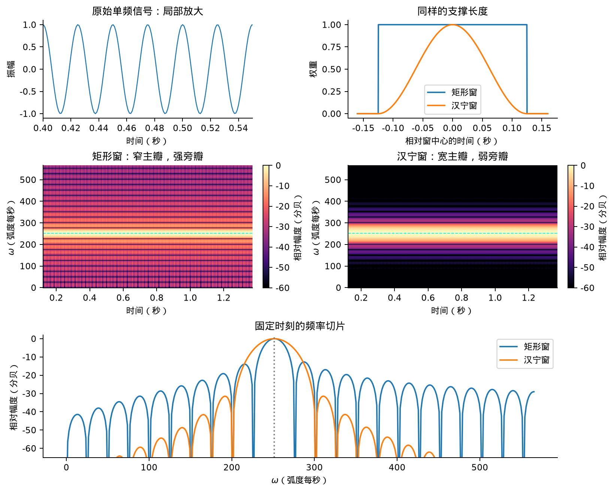
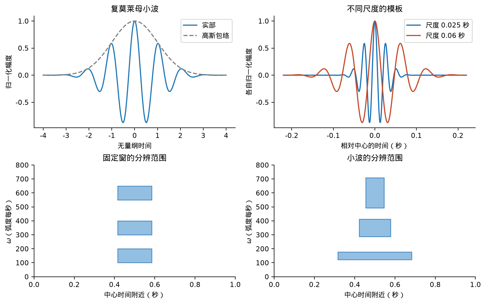
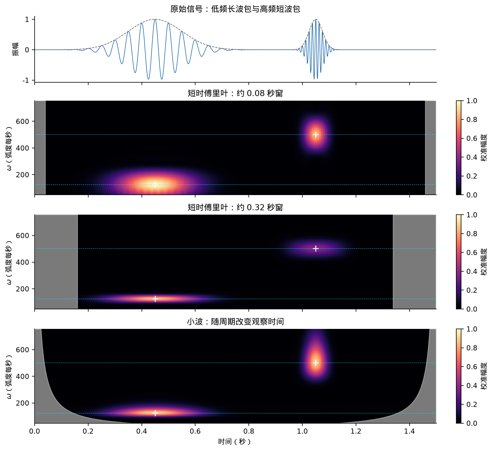
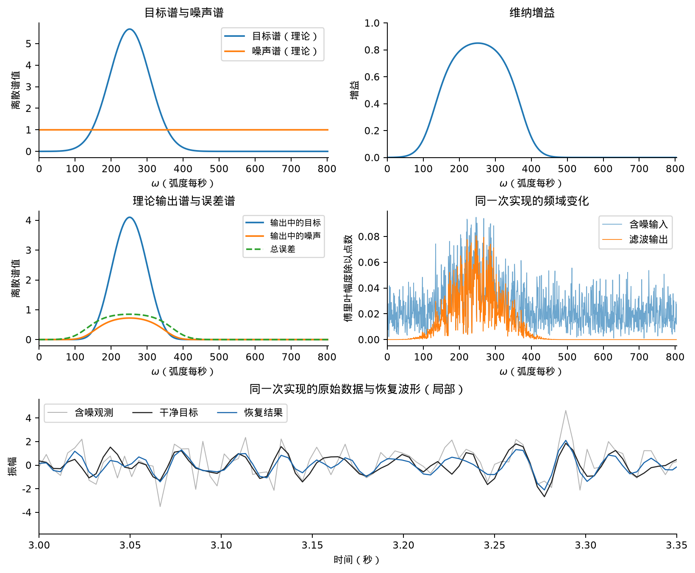

本笔记梳理音频声学中的信号表示、统计估计与信号恢复，侧重主要模型及其物理解释。
整体框架
把对象统一为有限时间序列 \(x_n\) 或多通道向量 \(\boldsymbol x_n\)。相关方法分为三类：
| 任务 | 输入 | 输出 | 主要问题 |
|---|---|---|---|
| 表示 | 一条信号及分析基 | 展开系数；数据依赖的基 | 选择表示信号的基 |
| 统计估计 | 有限样本及统计假设 | 谱、协方差或模型参数 | 怎样从一次实现估计总体性质？ |
| 信号恢复 | 观测及目标相关信息 | 目标估计，有时含不确定性 | 从观测数据恢复目标 |
记连续傅里叶变换为 \(X(\omega)=\int x(t)e^{-\mathrm{i}\omega t}\mathop{}\!\mathrm{d} t\)，逆变换含 \(1/(2\pi)\)。离散角频率 \(\Omega=\omega\Delta t\)，\(\Delta t\) 为采样间隔。信号默认去均值，实向量用转置，复向量用共轭转置；\(\mathbb{E}\) 表示总体平均，帽号表示由数据得到的估计。
信号表示
协方差本征模变换
卡尔胡宁—洛埃夫变换以协方差本征向量为正交基，展开系数互不相关，其方差为对应本征值。按本征值降序排列，前几个模保留最大的总方差；能否用少数模表示信号取决于本征值的分布：
短时傅里叶变换
全局傅里叶变换不保留频率成分的时间定位。短时傅里叶变换通过以 \(\tau\) 为中心的局部加窗引入时间坐标：
实窗 \(g\) 决定分析时长及边缘权重。复系数的模反映局部振荡强度，相位反映振荡的对齐关系；时频图通常只显示模或模平方。
对单频信号 \(x(t)=A e^{\mathrm{i}\omega_0t}\)，令 \(u=t-\tau\)，得到
单频信号的局部频谱
在窗口完整落入记录的区域内，单频信号的系数模不随时间变化；频带中心为 \(\omega_0\)，展宽和旁瓣由窗频谱 \(G\) 决定。
比较同样支撑在 \([-T/2,T/2]\) 的矩形窗与汉宁窗（Hann 窗）：
矩形窗突然截断振荡，主瓣较窄，远处旁瓣却较强；汉宁窗在两端平滑归零，远处泄漏减弱，代价是主瓣变宽。

矩形窗与汉宁窗对同一单频信号的分析：原始波形与窗形、时频图、固定时刻的频率切片。信号频率 \(40\) 赫兹，窗长 \(0.25\) 秒；幅度按各窗的单频响应校准，以 \(20\log_{10}\) 显示。所示窗口均完整落在记录内。
分辨邻近频率需要足够长的观察时间，以积累可辨认的相位差；定位短事件则要求较短的窗口。频率差为 \(\Delta f\)、结构变化时间为 \(T_{\rm var}\) 时，希望存在（左侧常数取决于窗形和分辨判据）
小波变换
小波的分析时长随振荡周期缩放：低频对应长窗口，高频对应短窗口。以带零均值修正的复莫莱小波为例：
\(u\) 无量纲，\(C\) 使 \(\int|\psi|^2\mathop{}\!\mathrm{d} u=1\)。高斯包络限定振荡的持续范围，修正项使积分为零，从而消除对恒定偏置的响应。实部与虚部提取两个近似正交的振荡分量。
平移 \(b\)、缩放 \(a>0\) 后，分析模板与小波系数为：
这里 \(a,b\) 以秒计，\(a^{-1/2}\) 保持模板的平方积分不变。尺度 \(a\) 同时控制包络宽度与振荡周期，\(W_x\) 为信号在该模板上的投影系数。
若母小波频谱峰位于无量纲角频率 \(\omega_c\)，傅里叶缩放性质给出
尺度与中心频率
因此 \((b,a)\) 可换成 \((b,\omega_c/a)\) 的时频坐标；尺度越大，中心频率越低。

复莫莱模板及其时频分辨范围。上：母小波与两种尺度的模板，按中心值归一。下：固定窗保持分析时长与绝对带宽；小波在低频使用长窗口，在高频使用短窗口。方块表示有效分辨范围。
时频分辨率比较
对一个固定模板，缩放使有效时间宽度与频带宽度分别满足 \(\Delta t\propto a\)、\(\Delta\omega\propto1/a\)。因此小波近似保持相对带宽 \(\Delta\omega/\omega_{\text{中心}}\)；固定窗的短时傅里叶变换保持绝对带宽。时间与频率分辨的折中仍然存在。
下图 先给出原信号，再展示短窗、长窗和小波的结果。

两个波包的时频表示。上行为原始信号；短、长汉宁窗分别为 \(82\)、\(328\) 点（采样率每秒 \(1024\) 点），小波采用复莫莱模板。颜色为按单频响应校准的幅度，白色标记为已知波包中心，灰区提示记录边界影响。
滤波器组观点
固定分析频率时，短时傅里叶系数等价于带通滤波输出乘以一个已知相位因子。因此逐窗变换也可视为并行滤波器组：各通道提取一个频带随时间的变化。
自回归模型
自回归模型与线性预测
设 \(x_n\) 为等时间间隔采样的声压。振动具有连续性：一个模被激发后，会继续振荡并逐渐衰减，因此相邻时刻的声压通常相关。自回归模型用最近 \(p\) 个采样值描述这种记忆：
前一项为线性预测，系数 \(a_k\) 描述过去的振动对当前值的影响；\(u_n\) 是预测后剩下的新扰动，称为创新。模型假设创新均值为零、方差为 \(\sigma_u^2\)，且不同时刻互不相关，并与过去的信号不相关。它可代表持续激发振动的随机驱动，不必是测量误差。
二阶模型可直接描述一个衰减振荡模：
撤去驱动后，其自由振动为 \(x_n=A r^n\cos(n\Omega_0+\phi)\)。\(A,\phi\) 由初始条件决定；\(\Omega_0\) 是每个采样间隔内的振荡相位，取 \(0<\Omega_0<\pi\)。若采样间隔为 \(\Delta t\)，振荡角频率为 \(\Omega_0/\Delta t\)，振幅衰减时间为
\(r\) 越接近 \(1\)，振动衰减越慢，记忆越长。在远离零频及采样上限的弱阻尼情形，谱峰位于振荡频率附近，衰减越慢，峰越窄。这里是离散受驱振子的模型；连续振子采样后的随机驱动不一定仍是白色创新。
对稳定的自回归模型，白色驱动经过上述递推形成有色声压信号，其离散功率谱为
分母描述各频率的响应，接近共振的频率被放大，形成谱峰。因此拟合自回归系数，也是在拟合信号的振荡频率和衰减尺度。阶数过低可能漏掉振动成分，过高则可能把随机起伏拟合成额外的峰。
纯弛豫对应更简单的一阶模型。连续过程 \(\dot x=-\gamma x+\eta\) 中，\(\gamma>0\)，\(\eta\) 为零均值高斯白噪声，满足 \(\mathbb{E}[\eta(t)\eta(t')]=2D\delta(t-t')\)。间隔 \(\Delta t\) 精确采样后，
稳态相关按 \(e^{-\gamma|t|}\) 衰减，连续谱为 \(2D/(\gamma^2+\omega^2)\)。弛豫越慢，低频峰越窄；与上面的振荡模相比，它没有非零的自由振荡频率。
自回归模型的训练
训练就是从一段已知记录中确定预测系数。每次取前 \(p\) 个声压值预测下一点，用实际值减去预测值得到误差，再调整系数，使整段记录的平均平方误差最小：
\(N\) 为记录长度。由于预测对系数是线性的，可直接用最小二乘求解。拟合后检查模型是否稳定，以及残差是否还含明显的相关振荡；若有，说明模型尚未描述这部分结构。
自回归语言模型也根据前面的内容预测下一项，但输入是文本单元，输出是下一项的概率。训练时提高真实下一项的预测概率，通过反向传播逐步调整网络参数。两者的主要区别是：经典模型学习少量线性系数，语言模型学习更复杂的非线性关系。
训练通常使用记录中的真实历史；生成时则把刚生成的结果作为后续输入。经典模型按递推式加入随机创新，语言模型从预测分布中选取下一项。它们都逐步生成序列，预测误差也可能随递推累积。参见《动手学深度学习》语言模型章节。
信号恢复
维纳滤波的投影解释
设目标 \(d\) 与观测 \(x_1,\ldots,x_m\) 均为零均值实随机变量。维纳滤波在线性估计 \(\hat d=\boldsymbol w^{\mathrm T}\boldsymbol x\) 中最小化总体均方误差 \(\mathbb{E}[(d-\hat d)^2]\)。观测可取同一信号在不同时刻的采样。
维纳滤波的几何图像
维纳滤波就是把目标随机变量 \(d\) 正交投影到由可观测量 \(x_1,\ldots,x_m\) 张成的线性子空间。
随机变量空间的内积为 \(\langle u,v\rangle=\mathbb{E}[uv]\)，长度平方为均方幅度。若残差仍与某个观测相关，沿该方向调整估计即可降低误差；最优残差因此与整个观测子空间正交。正交只要求不相关，不要求独立。
任取另一个允许的估计 \(v\in\mathcal V\)，把误差拆成互相正交的两部分，便有
第二项非负，故投影 \(\hat d\) 使均方误差最小。把 \(e=d-\sum_jw_jx_j\) 代入正交条件，就得到
互相关给出观测与目标的联系，协方差校正观测间的相关性。若观测线性相关，权重可不唯一，但投影仍唯一。
当 \(\boldsymbol R_x\) 正定时，可以用 \(\boldsymbol z=\boldsymbol R_x^{-1/2}\boldsymbol x\) 白化，使 \(\mathbb{E}[\boldsymbol z\boldsymbol z^{\mathrm T}]=\boldsymbol I\)。此时每个方向的投影系数直接是 \(\mathbb{E}[d z_i]\)。换回原坐标才得到 \(\boldsymbol w_\star=\boldsymbol R_x^{-1}\boldsymbol r_{dx}\)：白化使用逆平方根，最终权重出现逆协方差。
频域维纳滤波
平稳过程的相关只依赖时间差，相关算子为卷积。傅里叶模是其本征函数，相关方程因而可按频率解耦。
傅里叶基下的维纳估计
频域维纳滤波是“相关结构已经在傅里叶基下对角化”的特殊情形：每个频率模分别进行最优线性估计。
这一结论适用于无限平稳过程的相关卷积算子。有限记录的一般托普利茨相关矩阵并不被离散傅里叶变换严格对角化；周期模型的循环矩阵可以，长记录则常作近似。不同频率的模在二阶意义上解耦，不等于一般意义上的统计独立。
对联合平稳的目标 \(s\) 与观测 \(x\)，允许使用过去和未来观测的非因果线性滤波给出
功率谱为平稳相关函数的傅里叶变换。其中互谱按 \(R_{sx}(\tau)=\mathbb{E}[s(t+\tau)x^*(t)]\) 的傅里叶变换定义，且在 \(S_{xx}>0\) 处取比值。\(\hat S\) 是目标变换系数的估计，双下标 \(S_{sx},S_{xx}\) 是谱密度。无限平稳信号的变换应按谱表示理解，有限记录才直接计算普通傅里叶系数。
在加性模型 \(x=s+n\) 中，若目标与噪声不相关，各频率的误差谱为
两项分别为目标衰减误差和残余噪声。对 \(H\) 最小化可得
信号远强于噪声时 \(H\simeq1\)，噪声占主导时 \(H\simeq0\)。增益随频率处的信噪比变化，目标集中在非零频率时可呈带通形状。残余噪声谱为 \(|H|^2S_{nn}\)，总误差还包含目标衰减项。

维纳滤波的目标谱、增益、输出谱及恢复波形。目标谱中心 \(40\) 赫兹，宽度参数 \(9\) 赫兹；目标与独立白噪声的总体方差均为 \(1\)。采用长 \(8\) 秒、采样率每秒 \(256\) 点的周期高斯模型。横轴为物理角频率，谱纵轴为离散双边谱值；总误差包含目标衰减与残余噪声。
本例的目标谱与噪声谱由生成模型给定。实际估计需要训练对、独立噪声记录或额外模型，仅由 \(S_{xx}=S_{ss}+S_{nn}\) 通常不能唯一分离两项。因果约束下需另求最优解。参见麻省理工学院维纳滤波讲义。
最小二乘与非线性估计
用有限训练对估计总体相关，可得到最小二乘方程。把观测排成设计矩阵 \(\boldsymbol X\)，目标排成 \(\boldsymbol d\)，最小二乘的正规方程为 \(\boldsymbol X^{\mathrm T}\boldsymbol X\hat{\boldsymbol w}=\boldsymbol X^{\mathrm T}\boldsymbol d\)。在相应样本平均收敛的条件下，两侧除以样本数分别趋于总体相关。因此最小二乘是有限样本上的经验拟合，维纳滤波是总体平方误差下的最优线性估计；时序样本需要相应的遍历或混合条件来支持这种联系。
若允许估计为任意平方可积函数 \(f(\boldsymbol x)\)，平方误差的最优解是条件均值 \(\mathbb{E}[d\mid\boldsymbol x]\)。联合高斯且零均值时，它是线性的，因而与维纳投影一致；一般分布下，线性观测空间只覆盖可预测信息的一部分。使用平方损失训练的非线性神经网络可以尝试逼近这个条件均值，但有限数据、函数表达能力和优化结果决定它实际学到什么。
最小均方自适应算法
最小均方自适应算法用单样本梯度更新线性滤波权重：
给定初始权重与步长 \(\mu\)，对每组训练对 \((\boldsymbol x_n,d_n)\) 计算误差并更新权重。这是半平方损失下的随机梯度下降，可按输入能量归一化步长。
小步长收敛与跟踪较慢，大步长增加稳态起伏并可能失稳。强相关输入使各本征方向的收敛速度差异增大，均方稳定性还依赖高阶矩和时序相关。
在最优点附近，权重更新可近似为带噪弛豫，协方差本征值控制各方向的弛豫速度。梯度噪声一般不满足热平衡噪声的条件。
对固定总体目标的确定性梯度迭代，权重误差的第 \(i\) 个协方差本征分量满足 \(v_i^{(k+1)}=(1-\mu\lambda_i)v_i^{(k)}\)。这说明大本征值方向限制稳定步长，小本征值方向决定慢收敛；确定性迭代的界是 \(0<\mu<2/\lambda_{\max}\)，不能直接当作随机更新的一般均方稳定界。
逆协方差与正则化
逆协方差在本征方向上除以相应方差，校正相关性与尺度。如果小本征值主要来自有限样本误差，这一步也会放大误差。对角加载 \(\widehat{\boldsymbol R}+\alpha\boldsymbol I\) 限制这种放大，代价是引入偏差并改变原来的最优解。
高斯先验下，逆协方差在负对数概率中扮演二次型刚度；观测约束与先验约束的刚度相加。实践中应解线性系统，而非显式计算逆矩阵。
例如线性高斯模型 \(\boldsymbol y=\boldsymbol H\boldsymbol s+\boldsymbol n\)，取零均值先验与独立零均值噪声，正定协方差为 \(\boldsymbol C_s,\boldsymbol C_n\)，后验的核心结构是
先验提供初始刚度，测量在能看见的方向增加刚度，二者共同决定估计和不确定性。各向同性先验与噪声给出岭正则化形式，相当于在拟合误差之外惩罚过大的系数。
图中信号均为合成数据。完整采样值、参数及复现方法见 示例数据与说明。
本文保留课程中的表示、谱估计与线性恢复主题；物理解释、人工智能联系及比较图为补充内容。谱估计与线性估计可参照 Carl Wunsch 的时间序列分析讲义。一般相关与谱的关系不要求热平衡，涨落耗散关系则需相应的平衡与响应假设。